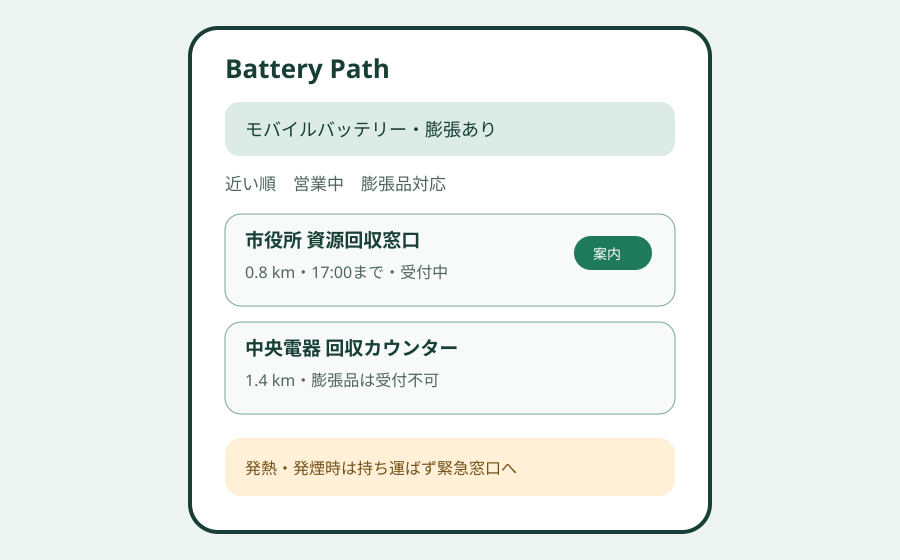
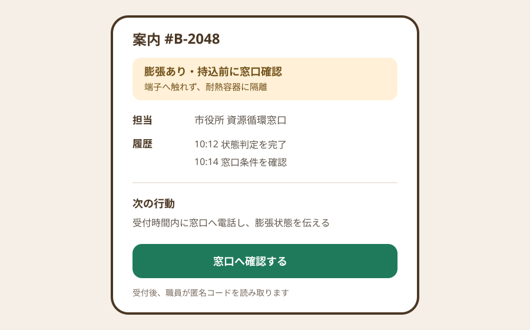

Question Note
リチウム電池の捨て方判定と回収完了をつなぐ小規模サービス案


全体像
リチウムイオン電池は家庭製品に広く入り込む一方、衝撃や高温で発火し、収集車や処理施設の火災につながります。家庭向けには自治体ごとのルール確認が必要で、電池が外せない、膨張している、メーカー回収対象か分からない、といった条件で案内が分岐します。
課題は捨て方の周知だけでなく、製品状態の判定、持込先ごとの受付条件、実際の回収完了が分断されていることです。
切り出す社会課題と対象利用者
初年度は回収拠点を複数持つ16の自治体・小売共同体に絞ります。住民は登録不要で判定を使い、自治体担当者と回収拠点スタッフがルール、臨時停止、受入実績を更新します。
| 現場課題 | 何が起きるか | 既存手段の限界 |
|---|---|---|
| 品目名が曖昧 | 一般ごみに混入する | PDFの分別表は製品状態まで聞き分けない |
| 拠点条件が変わる | 持ち込み後に断られる | 電話・Web更新が各拠点でずれる |
| 回収後が見えない | 周知の改善点を測れない | 問い合わせ数と受入件数が結び付かない |
既存の仕組みで足りない点
- 紙やPDFは、電池の取り外し可否、膨張・破損、メーカー名から安全な分岐を返せません。
- 電話やチャットでは、同じ質問が繰り返され、担当交代後に判断根拠が残りません。
- 表計算では住民向け地図、受付停止、匿名の完了計測を同時に安全運用しにくいです。
サービス案
「Battery Path」は、3〜5問の状態確認から地域ルールに合う回収先を案内し、拠点の受付完了までを匿名コードで閉じるWebサービスです。医療・消防判断はせず、発熱・発煙時は119番等の既存緊急窓口へ明確に誘導します。
- 製品種別、電池の取り外し可否、膨張・破損の判定フロー
- 距離、営業時間、対象品目、臨時停止で絞る回収拠点地図
- 拠点スタッフ用の受入可否・絶縁確認・保管箱記録
- 案内コードを読み取る匿名の受付完了記録
- 自治体向けに未完了率、迷いやすい品目、拠点別実績を集計
中核ワークフローとシステム要件
- 担当者が自治体ルールと拠点条件を承認・公開する。
- 住民が製品状態を回答し、候補拠点と安全注意を受け取る。
- 拠点スタッフが案内コードを確認し、受入結果と例外理由を記録する。
- 自治体担当者が未完了や誤案内を月次で見直す。
必須要件は、組織別権限、ルール版管理、地図検索、受付停止の即時反映、個人を特定しない分析、監査履歴、アクセシビリティです。
100万円規模に抑えた市場設定
| 項目 | 仮定 | 結果 |
|---|---|---|
| 到達可能顧客 | 直接提案できる40自治体・共同体 | 全国TAMではない営業リスト |
| 初年度顧客 | 16組織 | 月1組織強の導入 |
| 月額 | 5,000円 x 16 x 12 | 960,000円 |
| 導入支援 | 4組織 x 15,000円 | 60,000円 |
| 初年度売上 | 合計 | 1,020,000円 |
収益モデル
- 基本: ルール公開、5拠点、月次集計を含む組織課金
- 追加: 初期ルール移行と拠点登録
- 追加: 多言語文面と独自帳票の設定
住民課金ではなく、問い合わせ削減と安全な分別を得る組織側の固定課金が適します。
AWSシステム要件と支出
概算は東京リージョン、1 USD = 150円、無料枠・クレジット除外、16組織、月3万判定、50拠点です。価格改定や地図利用量を反映するため、実装前にAWS Pricing Calculatorで再計算します。
| AWSリソース | 製品固有の用途 | 使用量 | 月額 | 年額 |
|---|---|---|---|---|
| Amazon S3 | Web資産と公開ルール添付 | 3GB | 150円 | 1,800円 |
| Amazon CloudFront | 判定画面とSVG配信 | 30GB転送 | 900円 | 10,800円 |
| Amazon Cognito | 自治体・拠点担当者認証 | 150 MAU | 300円 | 3,600円 |
| Amazon API Gateway | ルール・拠点・受付API | 10万リクエスト | 250円 | 3,000円 |
| AWS Lambda | 判定、受付、集計処理 | 10万実行 | 350円 | 4,200円 |
| Amazon DynamoDB | 組織、判定ルール版、製品条件、回収拠点、受付停止、匿名案内コード、受入結果、変更履歴 | 2GB、月20万読書 | 700円 | 8,400円 |
| Amazon SES | 担当者への停止・期限通知 | 月2,000通 | 300円 | 3,600円 |
| Amazon CloudWatch | 誤判定エラーとAPI監視 | ログ2GB、アラーム5件 | 900円 | 10,800円 |
| AWS Backup | DynamoDBの日次復旧点 | 5GB | 300円 | 3,600円 |
| AWS Budgets | 月額上限の超過通知 | 2予算 | 150円 | 1,800円 |
| Amazon Route 53 | 独自ドメインDNS | 1ゾーン | 100円 | 1,200円 |
| Amazon Location Service | 回収拠点地図と距離検索 | 月3万地図表示 | 1,800円 | 21,600円 |
| AWS合計 | 小規模時の予算上限 | 6,200円 | 74,400円 | |
AIを使った開発見積もり
| 作業 | AI活用 | 目安 |
|---|---|---|
| 要件整理 | 分岐表と権限表の草案 | 1.5週 |
| プロトタイプ | 画面・ダミールール生成 | 2週 |
| 本実装 | CRUD、地図、テスト補助 | 5週 |
| 検証 | 境界条件の洗い出し | 2.5週 |
AIなしの約16週を約11週へ短縮する仮説です。安全文面、自治体ルール照合、受入テストは人が責任を持ちます。
売上・支出・利益
売上 - 支出 = 利益
| 売上 | 1,020,000円 | 月額960,000円 + 導入60,000円 |
|---|---|---|
| 支出 | 334,400円 | AWS 74,400円、ドメイン・検証端末30,000円、法務・安全文面外注120,000円、営業・現地検証110,000円 |
| 利益 | 685,600円 | 事業主の開発・運営人件費と税引前 |
必要人数と人材要件
運営兼開発1人が顧客窓口、設定、改善を担当します。
- 実行者: AWSサーバーレス、アクセシビリティ、自治体との要件調整
- 補助外注: 廃棄物実務者による安全文面レビュー、必要時の法務確認
- 人に残す判断: 危険品の受入可否、緊急時誘導、ルール公開承認
リスクと最初の検証
- 誤案内は火災リスクになるため、自治体承認済みルールだけを公開する。
- 拠点情報が古い場合は受付不能になるため、30日ごとに再承認を求める。
- 住民の登録を必須にすると離脱するため、匿名判定を標準にする。
最初は1自治体・3拠点で4週間、50品目の判定正答率、窓口電話件数、案内から受付完了までの率を確認します。
結論
ごみ分別表を増やすのではなく、製品状態から安全な持込先を示し、受入結果をルール改善へ戻す狭い循環に価値があります。